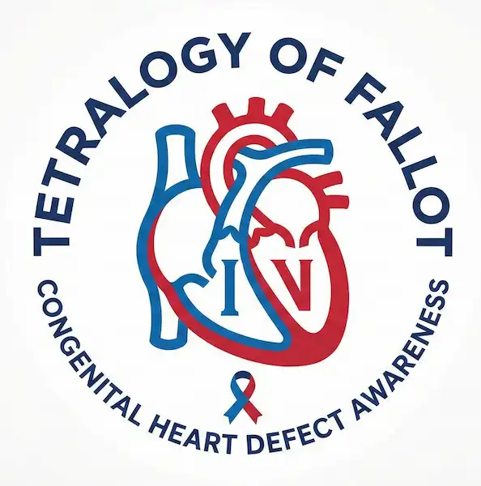

Milestone Stories
These are real milestones from Heart Warriors and their families. Every story is a reminder that life after a ToF diagnosis is full of hope and possibility.

Tetralogy of Fallot LifelineThese are real milestones from Heart Warriors and their families. Every story is a reminder that life after a ToF diagnosis is full of hope and possibility.